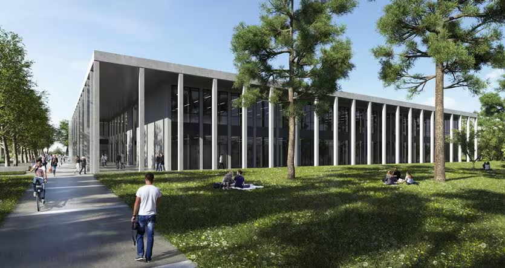
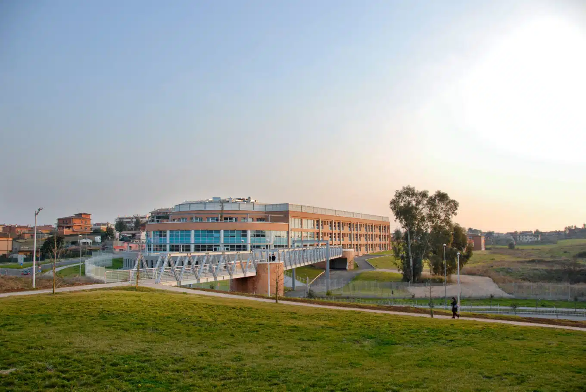
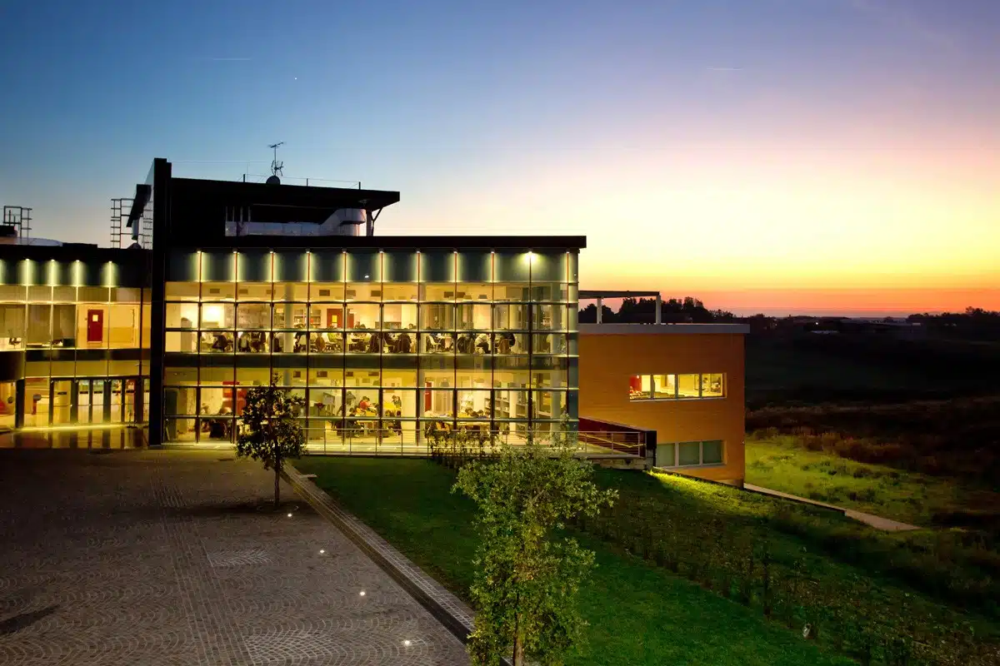

Venue: Università Campus Bio-Medico di Roma
Il convegno si svolgerà presso l’Università Campus Bio-Medico di Roma, ateneo dedicato all’integrazione tra ricerca scientifica e assistenza sanitaria. Immerso nella capitale, offre un contesto stimolante sia per l’attività accademica sia per la scoperta culturale di Roma.
Indirizzo
Università Campus Bio-Medico di Roma
Via Álvaro del Portillo, 21
00128 Roma, Italia
Come raggiungere l’UCBM
Da Stazione Termini: Metro LINEA B direzione Laurentina fino al capolinea, poi bus 72 per 13 fermate (Alessandrini/Del Portillo) e 2 minuti a piedi.
Da Roma:
– Mezzi pubblici: Metro B fino a Laurentina, poi bus 72 per 13 fermate (Alessandrini/Del Portillo) e breve passeggiata.
– In auto: Uscita GRA 25 – Laurentina direzione Ardea – Università Campus Bio-Medico di Roma. Seguire via di Vallerano e poi via Álvaro del Portillo fino al civico 21.
Da Aeroporto di Fiumicino: Treno per Stazione Termini, poi Metro B direzione Laurentina fino al capolinea e bus 72 per 13 fermate.
Da Aeroporto di Ciampino: Bus/shuttle per Stazione Termini, poi Metro B direzione Laurentina fino al capolinea e bus 72 per 13 fermate.
Dove alloggiare
Soluzioni consigliate: Link
.

